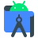
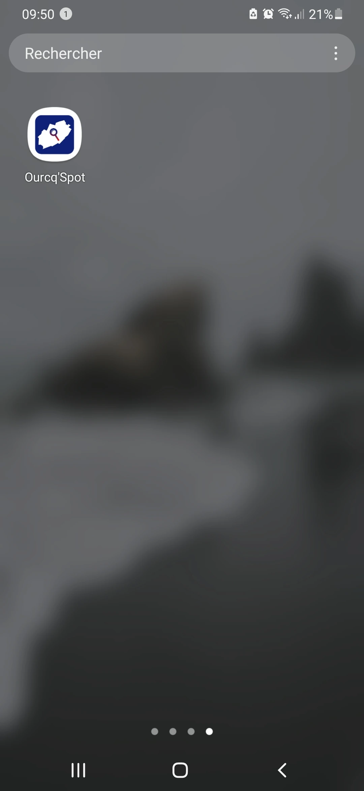
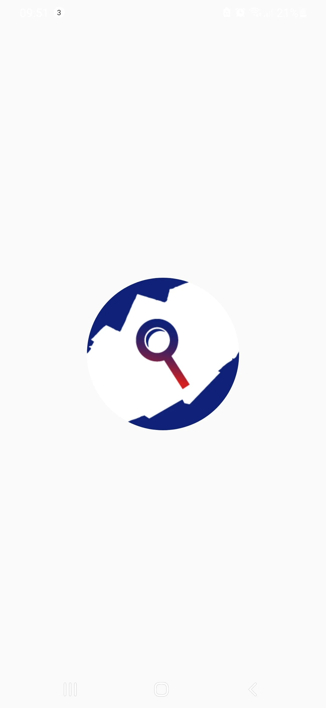
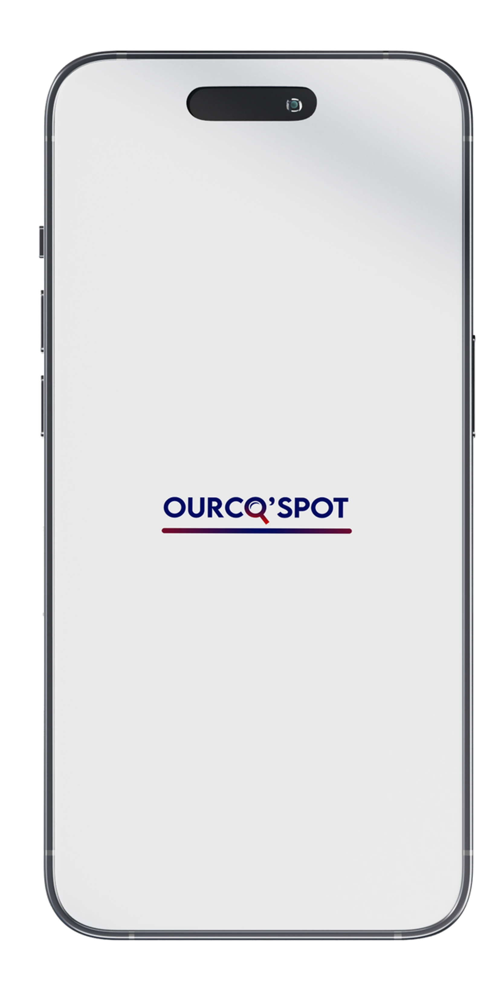
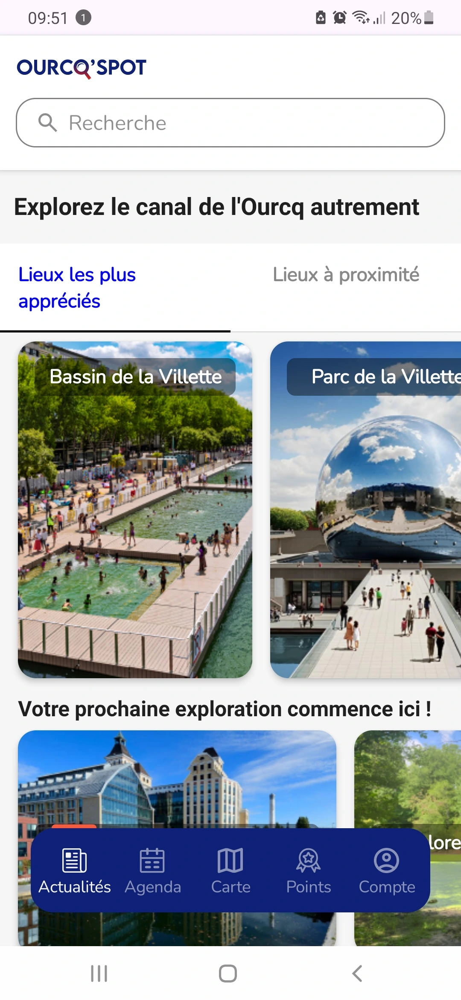

J'ai développé l'application mobile Ourcq Spot pour le Collectif l'Ourcq Grand Paris
lors d'un projet final de BUT MMI
Les utilisateurs peuvent accèder aux informations sur les lieux à visiter du Canal de l'Ourcq.
Ils ont accès aux événements grâce au calendrier qui s’actualise en temps réel selon la base de données.
fonctionnalités développées:
Motion design intégré pour un booting personnalisée de l'application
Carte interactive avec géolocalisation
Mise à jour en temps réel des événements affichables sur le calendrier
Interface responsive sur smartphone et tablette
Technologies utilisées et outils





Projet de groupes de BUT MMI, réalisé A à Z, avec des étudiants en UX/UI à l'IUT de Bobigny
(disponible sur GitHub)